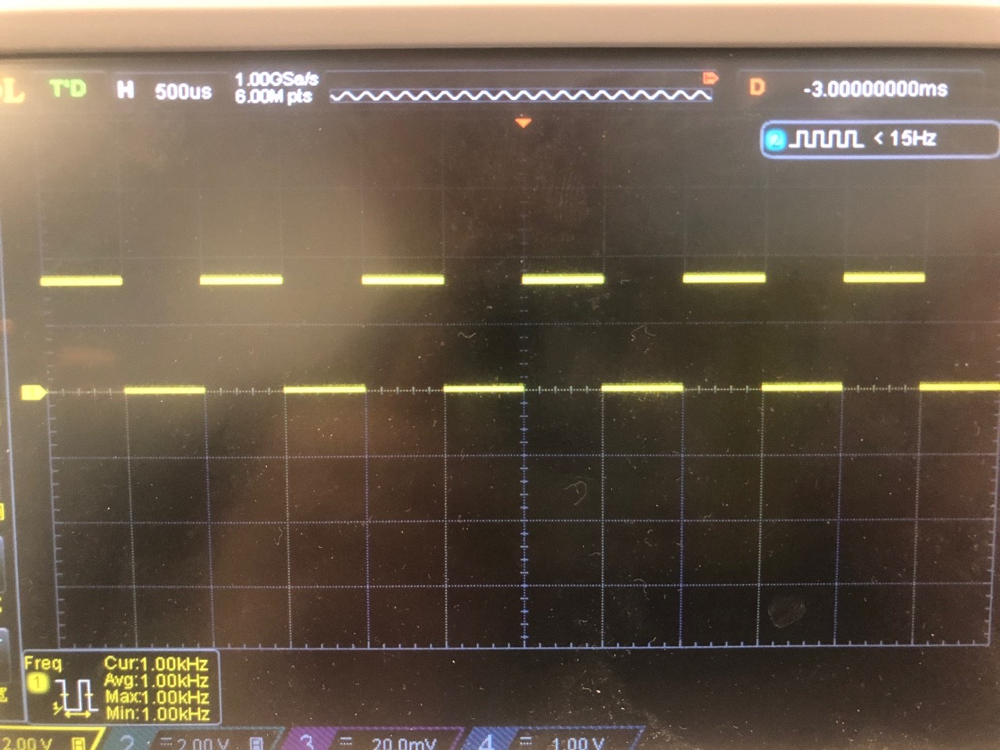
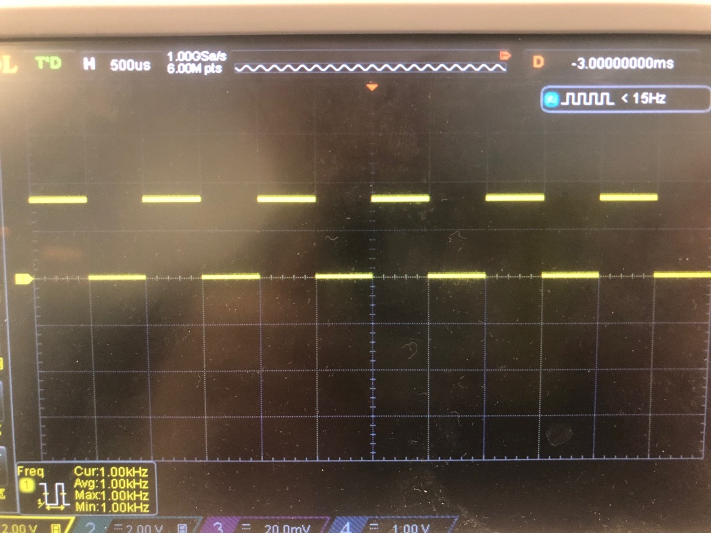
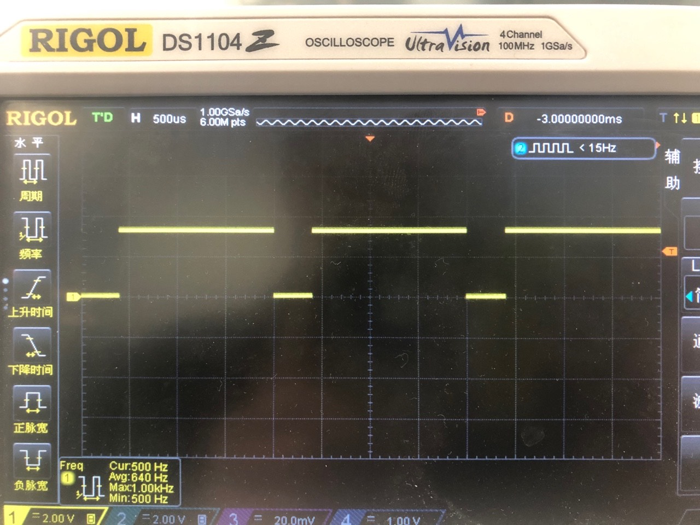
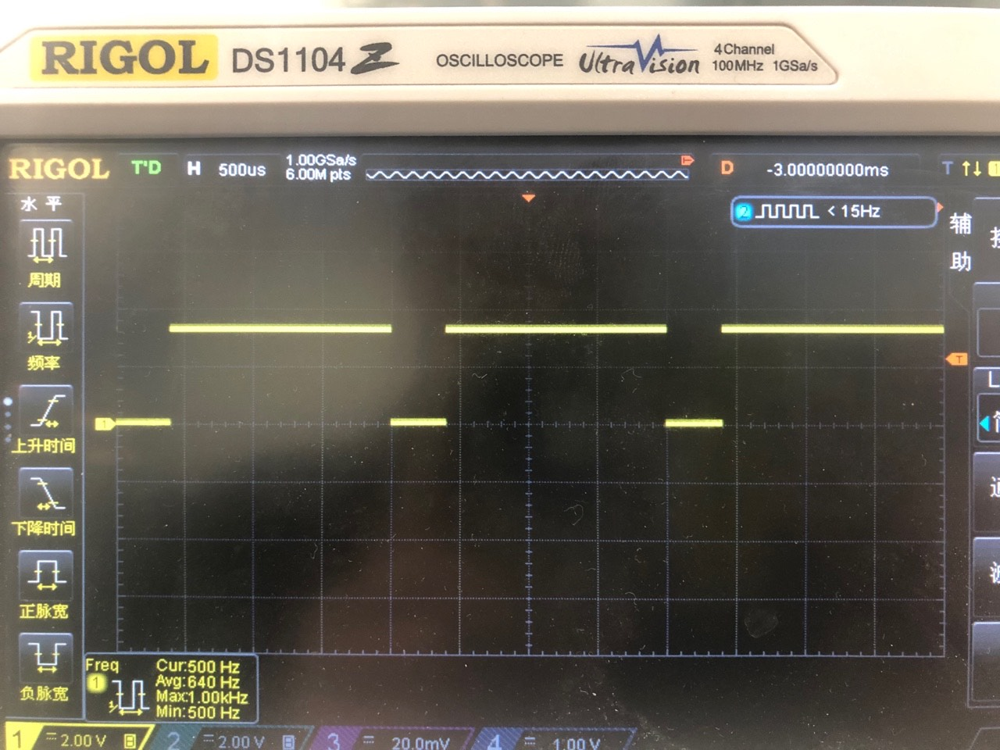

PWM
总览
本示例主要介绍pwm的使用方法。
准备及使用步骤
- 使用步骤：
给板子插上USB电源线，USB电源线默认连接UART0；
编译
customer_app/periperal/demo_pwm工程并下载工程；打开一个串口终端窗口（波特率为2000000，用于接收和发送uart消息）。
串口终端输入
demo_hosal_pwm_init，初始化pwm 。串口终端输入
demo_hosal_pwm_start，启动pwm 。demo设置输出的pwm引脚为0，频率1000hz，占空比50%，此时pin0已经产生pwm。
 
接着在串口中输入
demo_hosal_pwm_change_param,demo会调用接口改变pwm的占空比为80%，频率为500HZ。 
串口中输入
demo_hosal_pwm_stop停止pwm输出。
应用实例
- 示例代码
#include <stdio.h>
#include <cli.h>
#include <hosal_pwm.h>
#include <blog.h>
hosal_pwm_dev_t pwm;
void demo_hosal_pwm_start(void)
{
uint32_t p_freq;
uint32_t duty;
/* pwm port and pin set note: There is corresponding relationship between port and pin, for bl602, map is port = pin%5 */
pwm.port = 0;
pwm.pin = 0;
/* pwm config */
pwm.config.duty_cycle = 5000; //duty_cycle range is 0~10000 correspond to 0~100%
pwm.config.freq = 1000; //freq range is between 0~40MHZ,for more detail you can reference https://dev.bouffalolab.com/media/doc/602/open/reference_manual/zh/html/content/PWM.html
/* init pwm with given settings */
hosal_pwm_init(&pwm);
/* start pwm */
hosal_pwm_start(&pwm);
}
void demo_hosal_pwm_change_param(void)
{
/* change pwm param */
hosal_pwm_config_t para;
para.duty_cycle = 8000; //8000/10000=80%
para.freq = 500;
hosal_pwm_para_chg(&pwm, para);
}
void demo_hosal_pwm_stop(void)
{
/* stop pwm */
hosal_pwm_stop(&pwm);
hosal_pwm_finalize(&pwm);
}
- 通过
hosal_pwm_dev_t定义一个pwm的设备，需要设置pwm的port(通道），pin，频率和占空比。注意在602上port和pin存在 port = pin%5的对应关系，比如要在pin5上产生pwm，那么通道需要设置为0，如果不同的引脚占用相同的通道，则后面设置的引脚会覆盖前面的引脚，占空比是uint32类型，范围在0～10000，对应0～100%，比如设置5000，代表占空比50%，频率范围在0～40M。
/* port:0
* pin :0
* duty:50%
* freq:1000HZ
*/
hosal_pwm_dev_t pwm;
pwm.port = 0；
pwm.pin = 0;
pwm.config.duty_cycle = 5000;
pwm.config.freq = 1000;
- 通过
hosal_pwm_init初始化pwm。
hosal_pwm_init(&pwm);
- 通过
hosal_pwm_start开始输出pwm。
hosal_pwm_start(&pwm);
- 通过
hosal_pwm_para_chg更改pwm 频率和占空比，也可以通过hosal_pwm_freq_sethosa_pwm_duty_set来更改。
hosal_pwm_config_t para;
para.duty_cycle = 8000;
para.freq = 500;
hosal_pwm_para_chg(&pwm, para);
//hosal_pwm_freq_set(&pwm, 8000);
//hosal_pwm_duty_set(&pwm, 500);
- 调用
hosal_pwm_stop来停止pwm输出。
hosal_pwm_stop(&pwm);